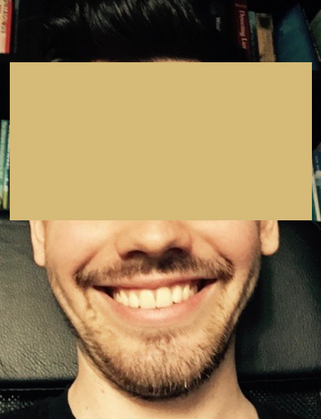
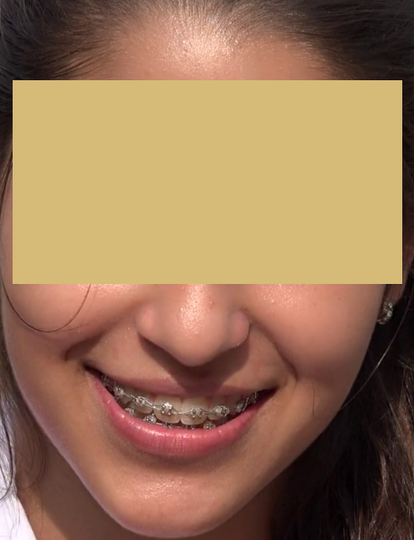
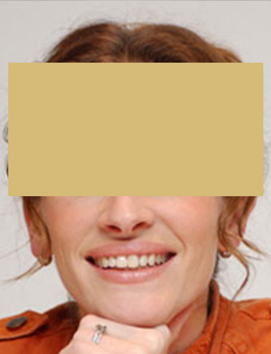

Genuine Smile
19th Century French neurologist Guillaume Duchenne identified two types of smiles. A Duchenne smile, involves contraction of both the zygomatic major muscle (which raises the corners of the mouth) and the orbicularis oculi muscle (which raises the cheeks and forms crows feet around the eyes). A fake smile uses only the zygomatic muscle, so you won't see the crows feet around the eyes. A Duchenne smile is difficult to fake so it has been called a genuine smile.
The eyes are important in identifying a genuine smile. See if you can guess which of the smiles below are genuine without seeing the eyes!




Fake Smile